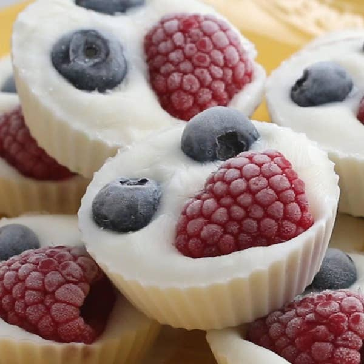

Froyo Fruit Cups

Description
Try this no-bake treat as a healthy after school snack!
Ingredients
for 12 cups
- blueberries
- raspberries
- 1.5 cups vanilla greek yogurt
Steps
- Arrange 12 cupcake liners in a muffin tin.
- Using a spoon, dollop two tablespoons of yogurt
into the bottom of each liner.
- Top with blueberries and raspberries.
- Freeze for at least two hours
- Remove cupcake liners before serving.
- Enjoy!
Return to homepage